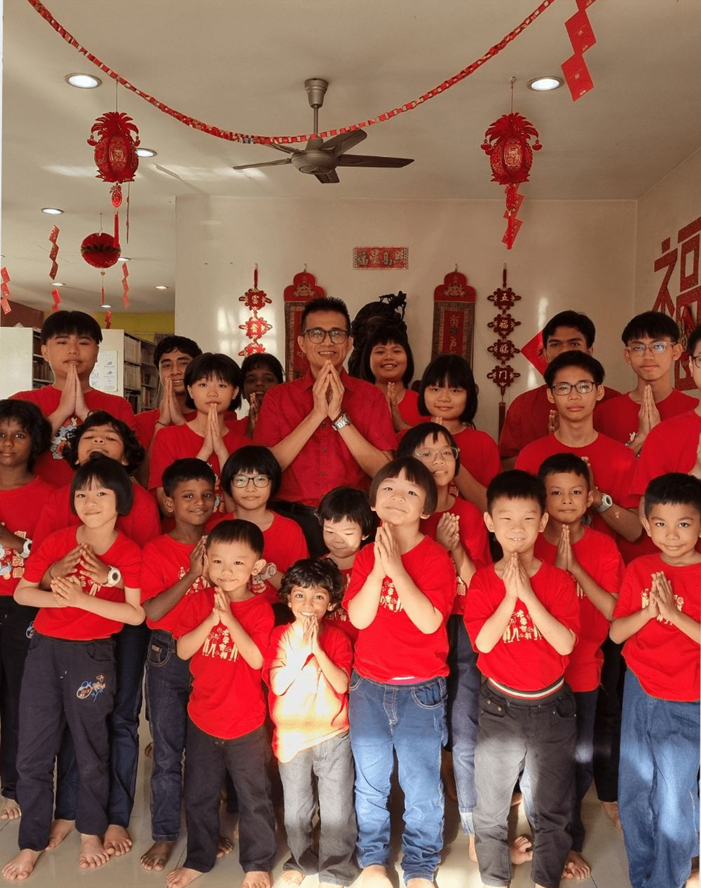
Shelter & daily care
- Safe housing and a family-like environment
- Nutritious meals and daily necessities
- Guidance from loving caretakers
“Every child deserves a place to call home.”
A safe place to grow, a future to believe in.
Since 2010, Amitabha Foundation Children Home has given orphaned and underprivileged children a safe, loving home, a full education and the care they need to build a brighter future.
Rooted in compassion, we care for the whole child: a safe home today, a good education for tomorrow, and the love and guidance to thrive.

“Every child deserves a place to call home.”
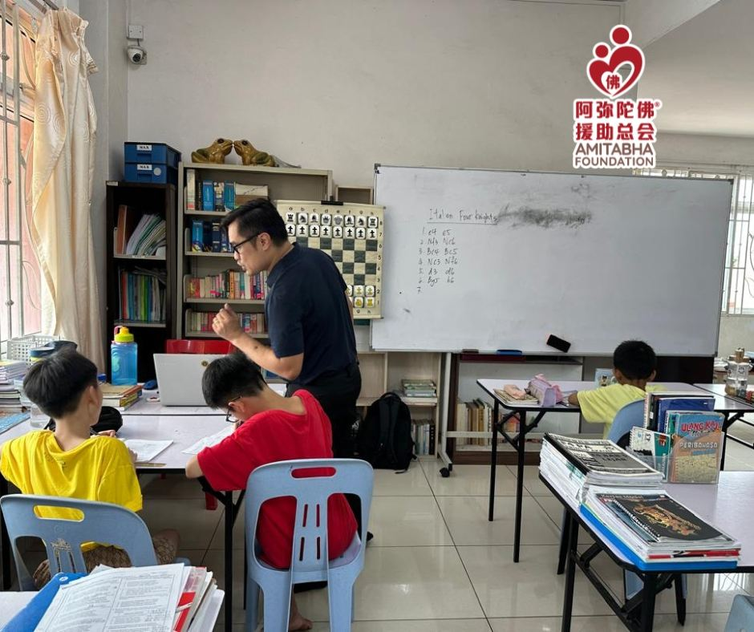
“Education is the key to breaking the cycle of poverty.”
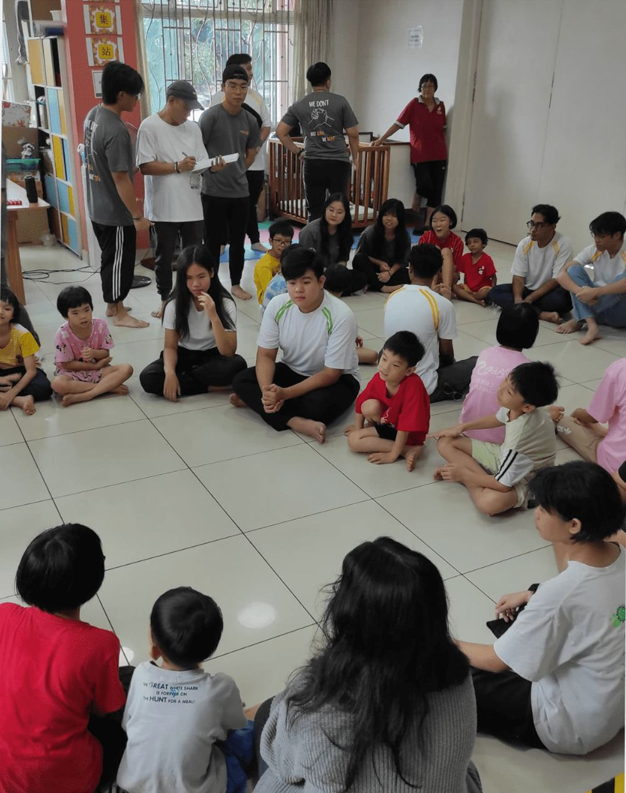
“With love and guidance, every child can thrive.”
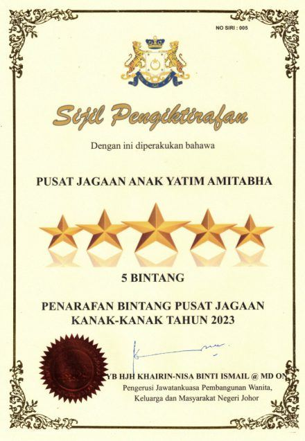
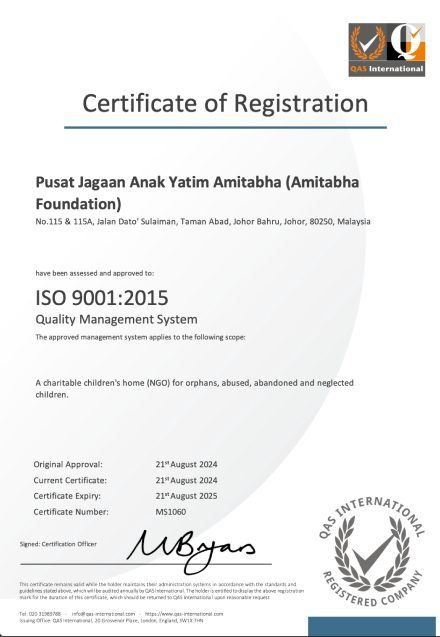
Our 5-Star rating and ISO 9001:2015 certification reflect not just the standards we meet, but the heart we pour into a loving, nurturing home for every child.
Awarded by the Department of Women, Family and Community Development, Johor State Government, at the state-level 5-Star rating ceremony for child care centres.
Selected by South Korea’s Ministry of Health and Welfare for an international communication meeting and fellowship exchange on child welfare.
Recognised by JKM as a role model in Johor Bahru, we hosted a formal visit to share our best practices in child welfare, education, cleanliness and documentation.
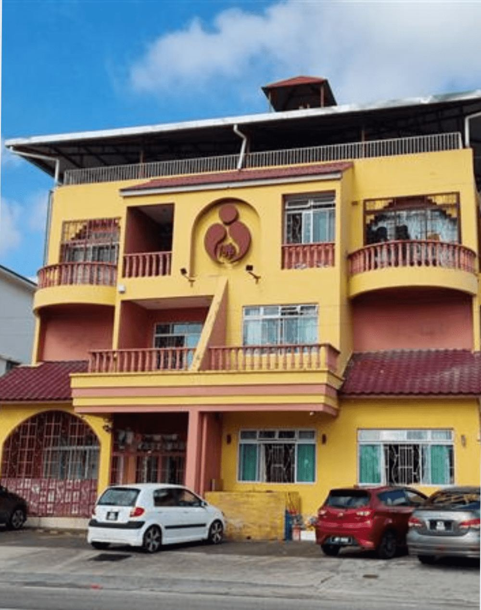
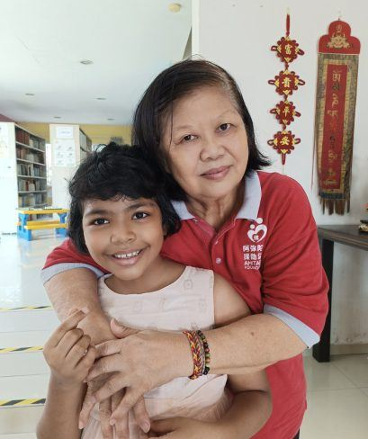
In the eyes of the Buddha, every child is like a lotus flower. With the right nurturing, they can rise from the mud and bloom into something beautiful. To provide a loving home for children who have lost their parents, Amitabha Foundation made a heartfelt vow to establish a Buddhist children home built on compassion and dedication.
Ours is one of the first Buddhist children homes in Malaysia to provide nutritious vegetarian meals, and the leading child adoption centre in Johor. We emphasise education grounded in Buddhist teachings, nurturing outstanding individuals who will contribute positively to society.
A nurturing home where every child has the opportunity to thrive through education, protection and essential care, empowered to build a secure and resilient future.
To ensure every child has a safe environment to grow, learn and thrive, and to create opportunities that help our children achieve their dreams.
Tender care and love within a nurturing family environment, for each child’s physical, spiritual, mental and educational well-being.
Festivals, art, school mornings and quiet study: a glimpse of the everyday moments that make this house a home.
Experience the heartwarming journey of our Children Home, where every child finds a place of comfort, compassion and opportunity. Watch how we nurture each child’s growth, education and well-being, paving the way toward a brighter future.
We believe every child holds the potential for greatness. Through resilience, determination and the power of education, they can rewrite their destinies. We are honoured to share the journeys of three remarkable young people who overcame adversity to build brighter futures.
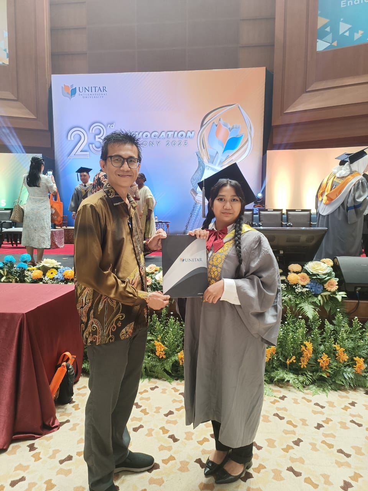
From uncertainty to opportunity
Jane came to us as an orphan at just eight years old, having never been to school. Today she is a qualified preschool teacher in Singapore.
Jane came to our home as an orphan at just 8 years old, having never received any formal education. Adjusting to school was a significant challenge for her, but we strongly believe that education is the key to success. Upon her arrival, we immediately enrolled her in a Chinese primary school, followed by a government secondary school, ensuring she had the support needed to thrive. Through her dedication and hard work, she excelled in her SPM examinations, paving the way for further studies.
Jane had a deep love for children and a clear vision of her future: she aspired to become a kindergarten teacher. With our support, she pursued her dream at UNITAR International University, where she completed a 2.5-year Diploma in Early Childhood Education. On 18 November 2023, she graduated with an outstanding CGPA of 3.52, a testament to her perseverance and determination.
With her qualification in hand, we were thrilled to help Jane secure a teaching position at My First School, a well-reputed preschool in Singapore. This incredible opportunity marks the beginning of a promising career, and we couldn’t be prouder of her achievements.
Jane’s story is a powerful reminder that, with the right support and opportunities, every child can rise above challenges and build a brighter future.
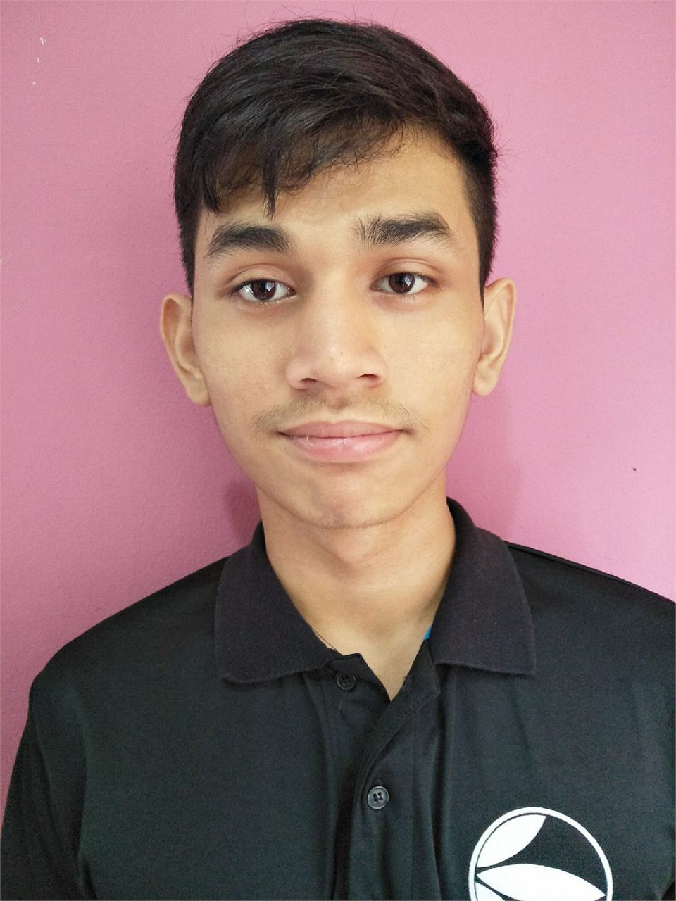
When life hits hard, hope still blooms
Jimmy lost his mother when he was nine. Lonely and searching for belonging, he found warmth, trust and focus with us, and went on to earn a place at Ming Chuan University in Taiwan.
At just nine years old, Jimmy faced an unimaginable loss: his mother passed away, and his father, too ill to care for him, had no choice but to leave him in the custody of his aunt. Though physically cared for, Jimmy struggled with profound loneliness, searching for a sense of belonging.
As Jimmy entered adolescence, his emotions became a battlefield. His rebellious streak was not defiance, but a desperate plea for love and recognition. Unable to manage his growing distress, his aunt made the difficult decision to send him to our home, an unexpected turning point in his life.
Here, Jimmy found what he had long yearned for: warmth, care and companionship. Loving caregivers and new friends rekindled his trust in others, and the shadows of his past began to lift. Knowing education was his key to a brighter future, he focused on his studies with unwavering dedication. His hard work paid off when he earned admission to Ming Chuan University in Taiwan, a significant milestone in his journey of transformation.
Today, Jimmy is not only a source of pride for our home but also a symbol of hope for countless children facing adversity. His story is a testament to resilience: no matter where you start, with perseverance and love, the possibilities are endless.
“No matter where you begin, with love and perseverance, you can create your future.”Jimmy Goh
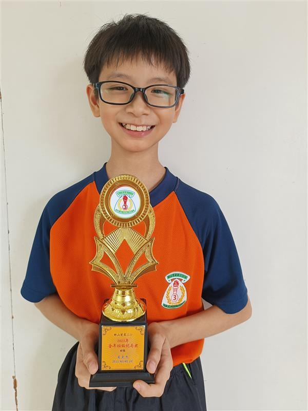
Destiny is not predetermined
At ten, Zell had never had a full meal or gone to school. After a three-year effort with the Welfare Department to bring him to safety, he is now winning awards in the classroom.
Zell Ng Ke Jie endured unimaginable hardship from a young age. Born into a troubled family, he was forced to sell prawn crackers on the streets alongside his father. If sales were poor, he faced severe beatings. Under the scorching sun, he toiled endlessly, deprived of the carefree childhood that every child deserves.
At just 10 years old, Zell had never experienced a full meal or received an education. His life was filled with exhaustion and fear, with no hope for the future.
Amid this suffering, our home received a desperate call from Zell’s mother seeking help. Recognising the urgency, we immediately reported his case to the Welfare Department. What followed was a relentless three-year collaborative effort with the welfare authorities. Finally, Zell was rescued from the depths of despair and welcomed into a warm, protective home.
With structured education and dedicated learning support, Zell embarked on a journey of growth. Though he started far behind his peers, his unwavering determination allowed him to bridge the gap and flourish.
Zell’s journey is proof that destiny is not predetermined. Given the right opportunity, every child has the potential to shine brilliantly.
Everyday joys, milestones and heartfelt connections from life at our home.
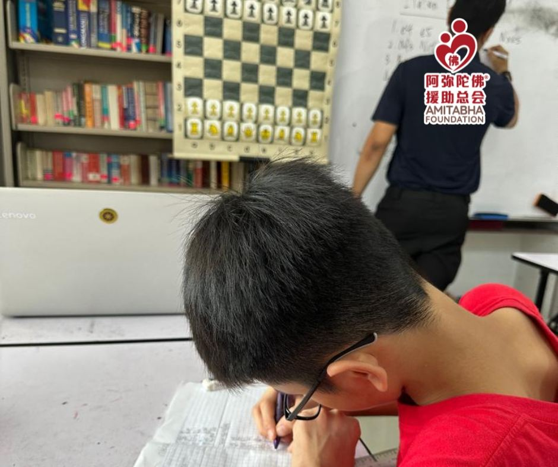
Don’t be fooled by their quiet scribbling: these kids are deep in chess strategy mode!
Every square on the board is a battlefield of logic and tactics, and every thoughtful move reflects their journey of growth and learning. A huge thank you to our dedicated volunteer coach, who has patiently trained them from the ground up, teaching them how to think and how to make the right move.
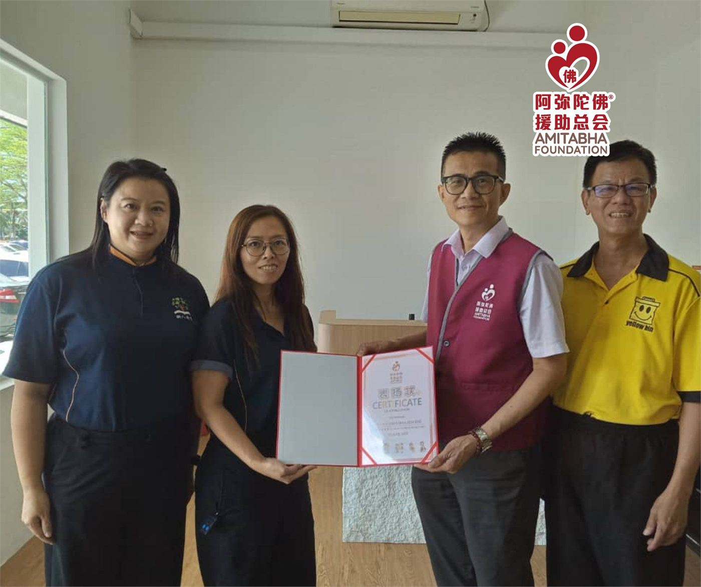
2025 marks the 8th year of the Charity Bazaar by Pusat Tuisyen Simfoni Cerdikjaya, and once again the entire proceeds were donated to our Children Home.
No fancy packaging, no big promotions: just heartfelt efforts that quietly raise funds, year after year. This year’s gift helps us care for 22 children, covering their daily needs, school fees and medical expenses. Thank you to the school, parents, students, alumni and public for walking alongside us all these years.
“Give back to society, from whom we have received.”
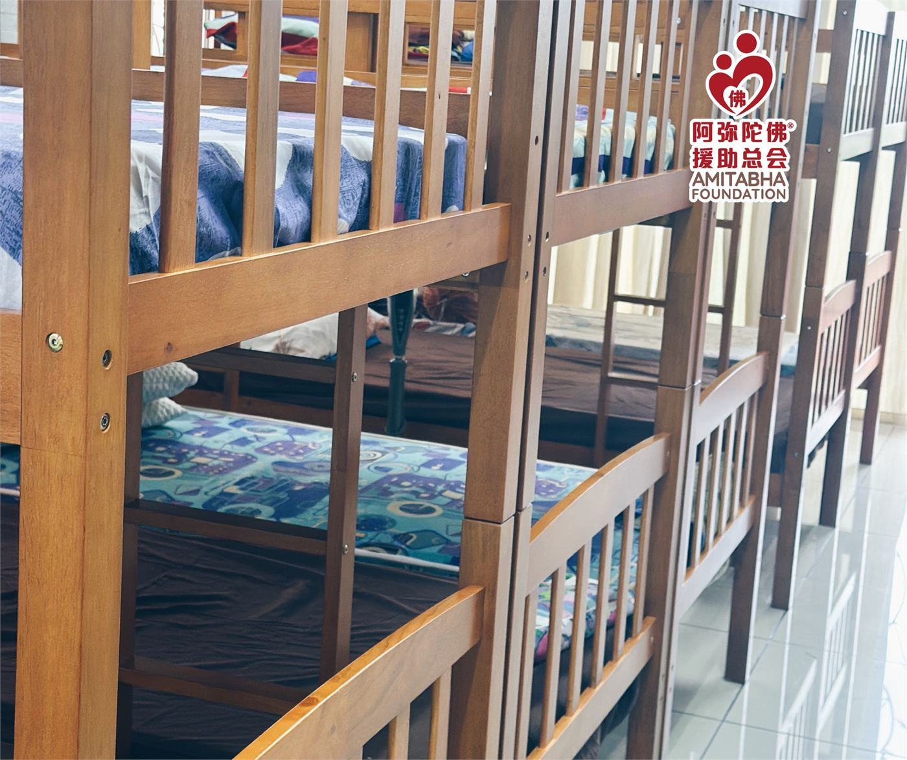
NAM MAH Furniture and Liviva Advisory Group gifted new beds, giving our children a safer, more comfortable place to rest and grow.
Every bed is more than furniture: it is a place where children can rest, grow and feel secure. However, our Children Home still needs 9 more beds and 14 mattresses, as many of the old beds are broken, unstable and unsafe. Whether you donate items or contribute funds, your support brings comfort and peace of mind to the children.
A few things people ask us most often. Can’t find your answer? Message us on WhatsApp.
RM50 gives a child school supplies. RM100 covers a month of food and healthcare. RM300 supports a child’s full care and education for a month.